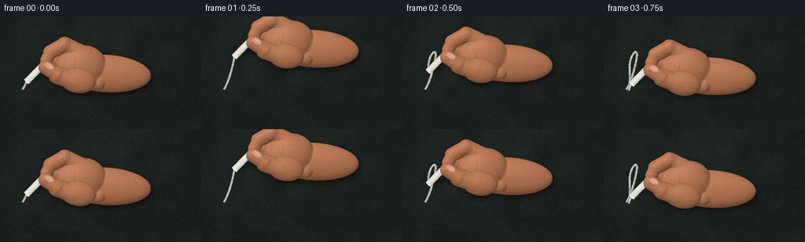
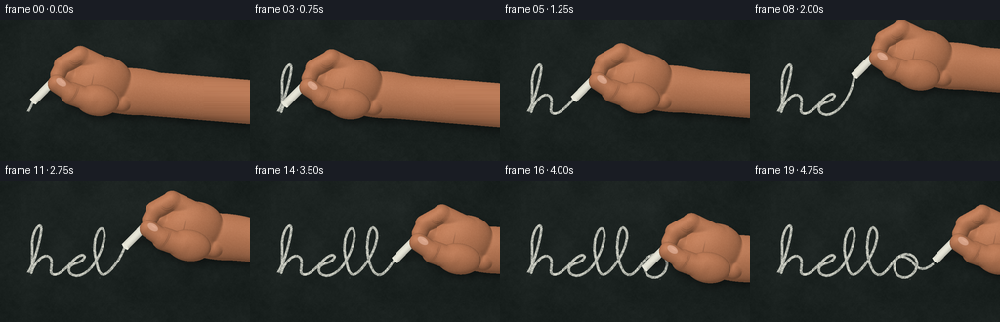
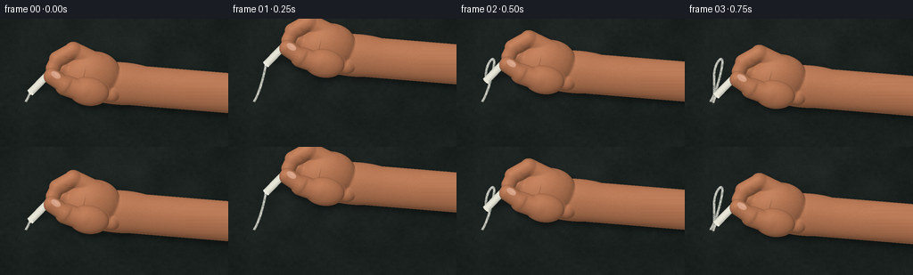
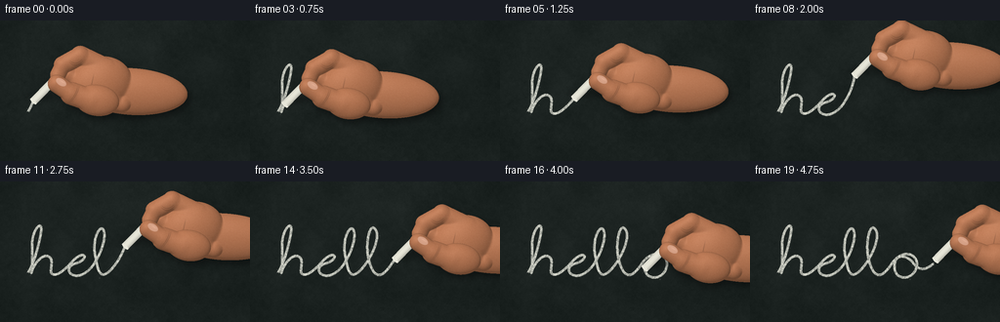
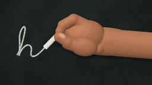

CODING AGENTS AS PIXEL WORLD MODELS
traex/GPT-6.1-Sol · phygen_031
点击播放 · 原生 RGB 像素
此结果可播放，但该运行尚未通过最终提交审核。页面展示不代表评测通过。
逐轮保存的候选
回放视频、检查图与代码变化。
每份候选均可单独播放。实际图片检查记录在下方工具轨迹中。
候选 01播放与检查图
点击播放 · 原生 RGB 像素


展开代码变化
--- 上一保存版本
+++ 本次保存版本
@@ -0,0 +1,237 @@
+from pathlib import Path
+import numpy as np
+from PIL import Image, ImageDraw, ImageFilter
+from scipy.ndimage import gaussian_filter
+import artifact_io
+
+ROOT=Path(__file__).parent
+W,H,S=256,144,3
+HH,WW=H*S,W*S
+Y,X=np.mgrid[0:HH,0:WW].astype(float)/S
+rng=np.random.default_rng(83102)
+
+def resize_noise(w,h,scale):
+ ar=rng.normal(size=(h,w)).astype(np.float32)
+ return np.asarray(Image.fromarray(ar,mode='F').resize((WW,HH),Image.Resampling.BICUBIC))*scale
+# A fixed, finely pitted, slightly green slate surface. Light falls across it from upper left.
+grain=rng.normal(0,1,(HH,WW))
+low=resize_noise(14,8,1.5)+resize_noise(65,37,.8)
+fine=grain*1.1+resize_noise(200,112,.9)
+illum=5*np.exp(-((X-66)/180)**2-((Y-33)/120)**2)-2*((X-128)/160)**2
+base=np.stack([24+illum+low+fine,31+illum+low+fine,29+illum+low+fine],-1)
+# Fine old eraser smears and sparse chalk lodged in the pits.
+smear=np.zeros((HH,WW))
+for j in range(25):
+ cx,cy=rng.uniform(-30,280),rng.uniform(10,145)
+ smear+=rng.uniform(.1,.65)*np.exp(-((X-cx)/rng.uniform(15,45))**2-((Y-cy)/rng.uniform(.6,3))**2)
+base+=smear[:,:,None]
+pit=rng.random((HH,WW))
+base+=((pit>.997)*rng.uniform(3,12,(HH,WW)))[:,:,None]
+base=np.clip(base,0,255)
+
+# Handwritten cursive. Each cubic records the route of the contact point, not a font reveal.
+curves=[
+((29,93),(34,86),(40,66),(42,53)),
+((42,53),(45,37),(31,49),(33,68)),
+((33,68),(33,78),(33,91),(32,94)),
+((32,94),(35,84),(44,73),(50,77)),
+((50,77),(57,81),(47,96),(56,95)),
+((56,95),(62,96),(72,84),(76,80)),
+((76,80),(88,69),(91,80),(78,84)),
+((78,84),(62,88),(74,103),(88,93)),
+((88,93),(97,88),(108,65),(107,54)),
+((107,54),(106,39),(92,56),(98,79)),
+((98,79),(100,92),(103,100),(112,92)),
+((112,92),(124,81),(134,57),(129,50)),
+((129,50),(122,39),(117,67),(122,82)),
+((122,82),(128,103),(137,96),(144,86)),
+((144,86),(157,65),(175,76),(170,89)),
+((170,89),(166,102),(148,102),(148,87)),
+((148,87),(149,72),(160,76),(166,82)),
+((166,82),(173,93),(181,90),(188,84)),
+]
+pts=[]
+for c in curves:
+ a,b,c1,d=np.array(c,float)
+ for u in np.linspace(0,1,65,endpoint=False):
+ pts.append((1-u)**3*a+3*(1-u)**2*u*b+3*(1-u)*u*u*c1+u**3*d)
+pts.append(np.array(curves[-1][-1]))
+pts=np.array(pts)
+dist=np.r_[0,np.cumsum(np.linalg.norm(np.diff(pts,axis=0),axis=1))]
+# Resample at uniform velocity to keep the piece of chalk moving naturally.
+path=np.stack([np.interp(np.linspace(0,dist[-1],1600),dist,pts[:,i]) for i in range(2)],1)
+# Density is constrained by the rough blackboard surface and varies on each deposited stroke.
+density=np.clip(.83+grain*.17+resize_noise(180,100,.13),.25,1)
+density[pit<.034]=.12
+
+# Coordinates relative to the writing tip. An anatomically layered pinching hand.
+def ellipse_surface(cx,cy,rx,ry,ang,z0,depth,U,V):
+ co,si=np.cos(ang),np.sin(ang)
+ qx=(U-cx)*co+(V-cy)*si
+ qy=-(U-cx)*si+(V-cy)*co
+ q=1-(qx/rx)**2-(qy/ry)**2
+ return np.where(q>0,z0+depth*np.sqrt(np.maximum(q,0)),-1000)
+
+def capsule(a,b,r,z,depth,U,V):
+ a=np.array(a); b=np.array(b); ab=b-a
+ t=np.clip(((U-a[0])*ab[0]+(V-a[1])*ab[1])/np.dot(ab,ab),0,1)
+ dd=(U-a[0]-t*ab[0])**2+(V-a[1]-t*ab[1])**2
+ q=1-dd/r**2
+ return np.where(q>0,z+depth*np.sqrt(np.maximum(q,0)),-1000)
+
+def hand_geometry(U,V,part):
+ if part=='back':
+ fields=[ellipse_surface(101,-10,57,24,.06,5,15,U,V),
+ ellipse_surface(68,-19,33,27,-.2,12,18,U,V),
+ capsule((75,-34),(48,-47),10,17,8,U,V),
+ capsule((48,-47),(30,-37),9.3,19,8,U,V),
+ capsule((30,-37),(25,-27),8,20,7,U,V),
+ capsule((70,-11),(49,-19),10,13,10,U,V),
+ capsule((49,-19),(37,-28),8.8,13,9,U,V),
+ capsule((81,-3),(61,-8),10,15,10,U,V),
+ capsule((61,-8),(50,-17),8.5,15,8,U,V),
+ capsule((91,2),(75,-1),9,14,8,U,V)]
+ else:
+ fields=[ellipse_surface(65,-1,23,16,.14,24,11,U,V),
+ capsule((59,-1),(39,-8),11.7,25,10,U,V),
+ capsule((39,-8),(24,-18),9.3,27,8.5,U,V)]
+ # Soft maximum retains articulated overlapping volumes without mechanical joints.
+ zz=np.maximum.reduce(fields)
+ val=np.zeros(U.shape)
+ for f in fields: val+=np.exp(np.clip((f-zz)*1.1,-80,0))
+ return zz+np.log(val)/1.1,zz>-900
+
+# The skin texture is fixed in the moving hand's coordinate system.
+skin_noise=rng.normal(0,1,(480,600))
+skin_noise=gaussian_filter(skin_noise,.7)
+
+def hand_layer(img,px,py,part):
+ U=X-px; V=Y-py
+ z,valid=hand_geometry(U,V,part)
+ # differentiate only the smooth surface, avoiding spurious edge normals
+ zfix=np.where(valid,z,0)
+ dx=np.gradient(zfix,axis=1)*S
+ dy=np.gradient(zfix,axis=0)*S
+ norm=np.sqrt(dx*dx+dy*dy+1)
+ nx,ny,nz=-dx/norm,-dy/norm,1/norm
+ lighting=np.clip(nx*-.34+ny*-.49+nz*.80,0,1)
+ ix=np.clip(((U+25)*S).astype(int),0,599)
+ iy=np.clip(((V+90)*S).astype(int),0,479)
+ tex=skin_noise[iy,ix]
+ color=np.array([183.,119.,84.])
+ lit=.59+.46*lighting
+ skin=color[None,None,:]*lit[:,:,None]+tex[:,:,None]*3.4
+ # Warm subsurface color at edges, subtle reflected board green in the shadows.
+ skin[:,:,0]+=3*(1-lighting)
+ skin[:,:,1]+=1.8*(1-lighting)
+ spec=np.maximum(0,(nx*-.18+ny*-.30+nz*.94))**23
+ skin+=spec[:,:,None]*9
+ # Bending creases localized on index finger and thumb; pores are not painted-on random spots.
+ crease=np.zeros(U.shape)
+ if part=='back':
+ for off in (0,2.1):
+ c=(V+37+off+.08*(U-43)**2)
+ crease+=np.exp(-c*c/.22)*np.exp(-((U-44)/7)**6)*.12
+ for off in (0,1.8):
+ c=(U-60+.22*(V+19))
+ crease+=np.exp(-c*c/.20)*np.exp(-((V+19+off)/7)**4)*.09
+ else:
+ for off in (0,1.55):
+ c=U-44+off+.55*(V+7)+.025*(V+7)**2
+ crease+=np.exp(-c*c/.20)*np.exp(-((V+8)/7)**4)*.16
+ skin*=1-np.clip(crease,0,.23)[:,:,None]
+ # Slight softened edge: high resolution makes the silhouette naturally antialiased on reduction.
+ img=np.where(valid[:,:,None],np.clip(skin,0,255),img)
+ if part=='front':
+ # Thumbnail, foreshortened and following the distal thumb, with cuticle and a thin free edge.
+ cx,cy=28.4,-19.6
+ angle=.57
+ qx=(U-cx)*np.cos(angle)+(V-cy)*np.sin(angle)
+ qy=-(U-cx)*np.sin(angle)+(V-cy)*np.cos(angle)
+ rr=(qx/6.25)**2+(qy/3.7)**2
+ nail=rr<1
+ a=np.clip((1-rr)*5,0,1)*valid*nail
+ nc=np.zeros_like(img)+np.array([209,156,129])
+ nc+=((1-rr)*7)[:,:,None]
+ free=np.exp(-((qx+4.7)/.8)**2)*5
+ nc+=free[:,:,None]
+ gloss=np.exp(-((qx-1)/3.3)**2-((qy+1.1)/.65)**2)*13
+ nc+=gloss[:,:,None]
+ img=img*(1-a[:,:,None])+nc*a[:,:,None]
+ return img,valid
+
+def chalk(img,px,py):
+ ux,uy=.70,-.71414284
+ dx=X-px; dy=Y-py
+ t=dx*ux+dy*uy
+ n=-dx*uy+dy*ux
+ length=32.5
+ # Cylinder, chipped contact end and visible oblique elliptical cap.
+ edge=.25*np.sin(n*8)+.15*np.sin(n*19)
+ mask=(t>edge-.9)&(t<length)&(np.abs(n)<4.15)
+ cross=np.sqrt(np.maximum(0,1-(n/4.15)**2))
+ light=np.clip(.70+.28*cross-.075*n/4.15,0,1)
+ tex=1.5*grain+.5*np.sin(t*11+n*15)
+ rgb=np.stack([234*light+tex,233*light+tex,219*light+tex],-1)
+ # The contact face looks granular and brighter than the cylindrical side.
+ cap=((t/1.65)**2+(n/4.15)**2)<1
+ rgb=np.where(cap[:,:,None],np.stack([232+grain*4,231+grain*4,218+grain*4],-1),rgb)
+ mask|=cap
+ return np.where(mask[:,:,None],np.clip(rgb,0,255),img),mask
+
+frames=[]
+for frame in range(20):
+ # 0.25 sec initial contact, 4 sec drawing, then a tiny natural lift at the end.
+ progress=np.clip((frame+.35)/18,0,1)
+ count=max(1,int(progress*(len(path)-1)))
+ contact=path[count]
+ px,py=contact
+ lift=max(0,frame-18)*2.5
+ px+=lift*.7; py-=lift*1.4
+ maskim=Image.new('L',(WW,HH),0)
+ d=ImageDraw.Draw(maskim)
+ if count>1:
+ coords=[tuple(p*S) for p in path[:count+1]]
+ d.line(coords,fill=255,width=8,joint='curve')
+ alpha=np.asarray(maskim).astype(float)/255
+ deposit=alpha*density
+ # A dusty halo hugs the scratch, while the denser core remains irregular.
+ halo=gaussian_filter(alpha,2.0)*.09
+ amount=np.clip(.88*deposit+halo,0,1)
+ img=base*(1-amount[:,:,None])+np.array([227,228,216])*amount[:,:,None]
+ # Deposited grit only appears along the already drawn trajectory.
+ for k in range(4,count,15):
+ pp=path[k]
+ rrng=np.random.default_rng(k+772)
+ gx=pp[0]+rrng.normal(0,2.0); gy=pp[1]+rrng.normal(1.0,1.5)
+ rad=rrng.uniform(.13,.40)
+ grit=np.exp(-((X-gx)**2+(Y-gy)**2)/(2*rad**2))*rrng.uniform(.10,.35)
+ img=img*(1-grit[:,:,None])+np.array([207,211,201])*grit[:,:,None]
+ # Soft cast shadow is offset from the hand by its distance to the board.
+ _,backmask=hand_geometry(X-px,Y-py,'back')
+ _,frontmask=hand_geometry(X-px,Y-py,'front')
+ sh=Image.fromarray(((backmask|frontmask)*255).astype('uint8'))
+ sh=sh.transform((WW,HH),Image.Transform.AFFINE,(1,0,-3*S,0,1,-4*S),Image.Resampling.BILINEAR).filter(ImageFilter.GaussianBlur(3.4*S))
+ shadow=np.asarray(sh)/255*.42
+ img*=1-shadow[:,:,None]
+ # A tighter contact shadow directly underneath the little chalk stick.
+ dx=X-px; dy=Y-py
+ shadow2=np.exp(-((dx-9)/13)**2-((dy+5)/5)**2)*.25
+ img*=1-shadow2[:,:,None]
+ img,_=hand_layer(img,px,py,'back')
+ img,_=chalk(img,px,py)
+ img,_=hand_layer(img,px,py,'front')
+ # Fresh, extremely small dust grains fall down the plane at the point of abrasion.
+ if frame<19:
+ for j in range(10):
+ age=(j+frame%3)/10
+ gx=contact[0]+np.sin(j*13+frame)*1.7
+ gy=contact[1]+.5+age*age*8
+ rad=.13+(j%3)*.055
+ dust=np.exp(-((X-gx)**2+(Y-gy)**2)/(2*rad*rad))*(1-age)*.57
+ img=img*(1-dust[:,:,None])+np.array([229,227,213])*dust[:,:,None]
+ # Optical downsampling integrates the grains, skin pores, and cylinder silhouette.
+ im=Image.fromarray(np.uint8(np.clip(img,0,255))).resize((W,H),Image.Resampling.LANCZOS)
+ frames.append(np.asarray(im))
+artifact_io.save(np.stack(frames).astype(np.uint8), ROOT)
+print('Saved 20 frames to',ROOT)
候选 02播放与检查图
点击播放 · 原生 RGB 像素


展开代码变化
--- 上一保存版本
+++ 本次保存版本
@@ -12,7 +12,7 @@
def resize_noise(w,h,scale):
ar=rng.normal(size=(h,w)).astype(np.float32)
- return np.asarray(Image.fromarray(ar,mode='F').resize((WW,HH),Image.Resampling.BICUBIC))*scale
+ return np.asarray(Image.fromarray(ar).resize((WW,HH),Image.Resampling.BICUBIC))*scale
# A fixed, finely pitted, slightly green slate surface. Light falls across it from upper left.
grain=rng.normal(0,1,(HH,WW))
low=resize_noise(14,8,1.5)+resize_noise(65,37,.8)
@@ -82,6 +82,7 @@
def hand_geometry(U,V,part):
if part=='back':
fields=[ellipse_surface(101,-10,57,24,.06,5,15,U,V),
+ capsule((103,-9),(310,8),22.5,5,15,U,V),
ellipse_surface(68,-19,33,27,-.2,12,18,U,V),
capsule((75,-34),(48,-47),10,17,8,U,V),
capsule((48,-47),(30,-37),9.3,19,8,U,V),
可观测工具轨迹
实际执行的命令与返回图片。
命令 1exit 0
/bin/bash -lc 'ls -la && cat prompt.txt && cat GENERATION_RULES.md && cat task_spec.json'
命令 2exit 0
/bin/bash -lc "cat artifact_io.py && python - <<'PY'
import numpy,PIL
print('numpy/PIL ready')
PY"命令 3exit 0
/bin/bash -lc "cat > generate.py <<'PY'
from pathlib import Path
import numpy as np
from PIL import Image, ImageDraw, ImageFilter
from scipy.ndimage import gaussian_filter
import artifact_io
ROOT=Path(__file__).parent
W,H,S=256,144,3
HH,WW=H*S,W*S
Y,X=np.mgrid[0:HH,0:WW].astype(float)/S
rng=np.random.default_rng(83102)
def resize_noise(w,h,scale):
ar=rng.normal(size=(h,w)).astype(np.float32)
return np.asarray(Image.fromarray(ar,mode='F').resize((WW,HH),Image.Resampling.BICUBIC))*scale
# A fixed, finely pitted, slightly green slate surface. Light falls across it from upper left.
grain=rng.normal(0,1,(HH,WW))
low=resize_noise(14,8,1.5)+resize_noise(65,37,.8)
fine=grain*1.1+resize_noise(200,112,.9)
illum=5*np.exp(-((X-66)/180)**2-((Y-33)/120)**2)-2*((X-128)/160)**2
base=np.stack([24+illum+low+fine,31+illum+low+fine,29+illum+low+fine],-1)
# Fine old eraser smears and sparse chalk lodged in the pits.
smear=np.zeros((HH,WW))
for j in range(25):
cx,cy=rng.uniform(-30,280),rng.uniform(10,145)
smear+=rng.uniform(.1,.65)*np.exp(-((X-cx)/rng.uniform(15,45))**2-((Y-cy)/rng.uniform(.6,3))**2)
base+=smear[:,:,None]
pit=rng.random((HH,WW))
base+=((pit>.997)*rng.uniform(3,12,(HH,WW)))[:,:,None]
base=np.clip(base,0,255)
# Handwritten cursive. Each cubic records the route of the contact point, not a font reveal.
curves=[
((29,93),(34,86),(40,66),(42,53)),
((42,53),(45,37),(31,49),(33,68)),
((33,68),(33,78),(33,91),(32,94)),
((32,94),(35,84),(44,73),(50,77)),
((50,77),(57,81),(47,96),(56,95)),
((56,95),(62,96),(72,84),(76,80)),
((76,80),(88,69),(91,80),(78,84)),
((78,84),(62,88),(74,103),(88,93)),
((88,93),(97,88),(108,65),(107,54)),
((107,54),(106,39),(92,56),(98,79)),
((98,79),(100,92),(103,100),(112,92)),
((112,92),(124,81),(134,57),(129,50)),
((129,50),(122,39),(117,67),(122,82)),
((122,82),(128,103),(137,96),(144,86)),
((144,86),(157,65),(175,76),(170,89)),
((170,89),(166,102),(148,102),(148,87)),
((148,87),(149,72),(160,76),(166,82)),
((166,82),(173,93),(181,90),(188,84)),
]
pts=[]
for c in curves:
a,b,c1,d=np.array(c,float)
for u in np.linspace(0,1,65,endpoint=False):
pts.append((1-u)**3*a+3*(1-u)**2*u*b+3*(1-u)*u*u*c1+u**3*d)
pts.append(np.array(curves[-1][-1]))
pts=np.array(pts)
dist=np.r_[0,np.cumsum(np.linalg.norm(np.diff(pts,axis=0),axis=1))]
# Resample at uniform velocity to keep the piece of chalk moving naturally.
path=np.stack([np.interp(np.linspace(0,dist[-1],1600),dist,pts[:,i]) for i in range(2)],1)
# Density is constrained by the rough blackboard surface and varies on each deposited stroke.
density=np.clip(.83+grain*.17+resize_noise(180,100,.13),.25,1)
density[pit<.034]=.12
# Coordinates relative to the writing tip. An anatomically layered pinching hand.
def ellipse_surface(cx,cy,rx,ry,ang,z0,depth,U,V):
co,si=np.cos(ang),np.sin(ang)
qx=(U-cx)*co+(V-cy)*si
qy=-(U-cx)*si+(V-cy)*co
q=1-(qx/rx)**2-(qy/ry)**2
return np.where(q>0,z0+depth*np.sqrt(np.maximum(q,0)),-1000)
def capsule(a,b,r,z,depth,U,V):
a=np.array(a); b=np.array(b); ab=b-a
t=np.clip(((U-a[0])*ab[0]+(V-a[1])*ab[1])/np.dot(ab,ab),0,1)
dd=(U-a[0]-t*ab[0])**2+(V-a[1]-t*ab[1])**2
q=1-dd/r**2
return np.where(q>0,z+depth*np.sqrt(np.maximum(q,0)),-1000)
def hand_geometry(U,V,part):
if part=='back':
fields=[ellipse_surface(101,-10,57,24,.06,5,15,U,V),
ellipse_surface(68,-19,33,27,-.2,12,18,U,V),
capsule((75,-34),(48,-47),10,17,8,U,V),
capsule((48,-47),(30,-37),9.3,19,8,U,V),
capsule((30,-37),(25,-27),8,20,7,U,V),
capsule((70,-11),(49,-19),10,13,10,U,V),
capsule((49,-19),(37,-28),8.8,13,9,U,V),
capsule((81,-3),(61,-8),10,15,10,U,V),
capsule((61,-8),(50,-17),8.5,15,8,U,V),
capsule((91,2),(75,-1),9,14,8,U,V)]
else:
fields=[ellipse_surface(65,-1,23,16,.14,24,11,U,V),
capsule((59,-1),(39,-8),11.7,25,10,U,V),
capsule((39,-8),(24,-18),9.3,27,8.5,U,V)]
# Soft maximum retains articulated overlapping volumes without mechanical joints.
zz=np.maximum.reduce(fields)
val=np.zeros(U.shape)
for f in fields: val+=np.exp(np.clip((f-zz)*1.1,-80,0))
return zz+np.log(val)/1.1,zz>-900
# The skin texture is fixed in the moving hand's coordinate system.
skin_noise=rng.normal(0,1,(480,600))
skin_noise=gaussian_filter(skin_noise,.7)
def hand_layer(img,px,py,part):
U=X-px; V=Y-py
z,valid=hand_geometry(U,V,part)
# differentiate only the smooth surface, avoiding spurious edge normals
zfix=np.where(valid,z,0)
dx=np.gradient(zfix,axis=1)*S
dy=np.gradient(zfix,axis=0)*S
norm=np.sqrt(dx*dx+dy*dy+1)
nx,ny,nz=-dx/norm,-dy/norm,1/norm
lighting=np.clip(nx*-.34+ny*-.49+nz*.80,0,1)
ix=np.clip(((U+25)*S).astype(int),0,599)
iy=np.clip(((V+90)*S).astype(int),0,479)
tex=skin_noise[iy,ix]
color=np.array([183.,119.,84.])
lit=.59+.46*lighting
skin=color[None,None,:]*lit[:,:,None]+tex[:,:,None]*3.4
# Warm subsurface color at edges, subtle reflected board green in the shadows.
skin[:,:,0]+=3*(1-lighting)
skin[:,:,1]+=1.8*(1-lighting)
spec=np.maximum(0,(nx*-.18+ny*-.30+nz*.94))**23
skin+=spec[:,:,None]*9
# Bending creases localized on index finger and thumb; pores are not painted-on random spots.
crease=np.zeros(U.shape)
if part=='back':
for off in (0,2.1):
c=(V+37+off+.08*(U-43)**2)
crease+=np.exp(-c*c/.22)*np.exp(-((U-44)/7)**6)*.12
for off in (0,1.8):
c=(U-60+.22*(V+19))
crease+=np.exp(-c*c/.20)*np.exp(-((V+19+off)/7)**4)*.09
else:
for off in (0,1.55):
c=U-44+off+.55*(V+7)+.025*(V+7)**2
crease+=np.exp(-c*c/.20)*np.exp(-((V+8)/7)**4)*.16
skin*=1-np.clip(crease,0,.23)[:,:,None]
# Slight softened edge: high resolution makes the silhouette naturally antialiased on reduction.
img=np.where(valid[:,:,None],np.clip(skin,0,255),img)
if part=='front':
# Thumbnail, foreshortened and following the distal thumb, with cuticle and a thin free edge.
cx,cy=28.4,-19.6
angle=.57
qx=(U-cx)*np.cos(angle)+(V-cy)*np.sin(angle)
qy=-(U-cx)*np.sin(angle)+(V-cy)*np.cos(angle)
rr=(qx/6.25)**2+(qy/3.7)**2
nail=rr<1
a=np.clip((1-rr)*5,0,1)*valid*nail
nc=np.zeros_like(img)+np.array([209,156,129])
nc+=((1-rr)*7)[:,:,None]
free=np.exp(-((qx+4.7)/.8)**2)*5
nc+=free[:,:,None]
gloss=np.exp(-((qx-1)/3.3)**2-((qy+1.1)/.65)**2)*13
nc+=gloss[:,:,None]
img=img*(1-a[:,:,None])+nc*a[:,:,None]
return img,valid
def chalk(img,px,py):
ux,uy=.70,-.71414284
dx=X-px; dy=Y-py
t=dx*ux+dy*uy
n=-dx*uy+dy*ux
length=32.5
# Cylinder, chipped contact end and visible oblique elliptical cap.
edge=.25*np.sin(n*8)+.15*np.sin(n*19)
mask=(t>edge-.9)&(t<length)&(np.abs(n)<4.15)
cross=np.sqrt(np.maximum(0,1-(n/4.15)**2))
light=np.clip(.70+.28*cross-.075*n/4.15,0,1)
tex=1.5*grain+.5*np.sin(t*11+n*15)
rgb=np.stack([234*light+tex,233*light+tex,219*light+tex],-1)
# The contact face looks granular and brighter than the cylindrical side.
cap=((t/1.65)**2+(n/4.15)**2)<1
rgb=np.where(cap[:,:,None],np.stack([232+grain*4,231+grain*4,218+grain*4],-1),rgb)
mask|=cap
return np.where(mask[:,:,None],np.clip(rgb,0,255),img),mask
frames=[]
for frame in range(20):
# 0.25 sec initial contact, 4 sec drawing, then a tiny natural lift at the end.
progress=np.clip((frame+.35)/18,0,1)
count=max(1,int(progress*(len(path)-1)))
contact=path[count]
px,py=contact
lift=max(0,frame-18)*2.5
px+=lift*.7; py-=lift*1.4
maskim=Image.new('L',(WW,HH),0)
d=ImageDraw.Draw(maskim)
if count>1:
coords=[tuple(p*S) for p in path[:count+1]]
d.line(coords,fill=255,width=8,joint='curve')
alpha=np.asarray(maskim).astype(float)/255
deposit=alpha*density
# A dusty halo hugs the scratch, while the denser core remains irregular.
halo=gaussian_filter(alpha,2.0)*.09
amount=np.clip(.88*deposit+halo,0,1)
img=base*(1-amount[:,:,None])+np.array([227,228,216])*amount[:,:,None]
# Deposited grit only appears along the already drawn trajectory.
for k in range(4,count,15):
pp=path[k]
rrng=np.random.default_rng(k+772)
gx=pp[0]+rrng.normal(0,2.0); gy=pp[1]+rrng.normal(1.0,1.5)
rad=rrng.uniform(.13,.40)
grit=np.exp(-((X-gx)**2+(Y-gy)**2)/(2*rad**2))*rrng.uniform(.10,.35)
img=img*(1-grit[:,:,None])+np.array([207,211,201])*grit[:,:,None]
# Soft cast shadow is offset from the hand by its distance to the board.
_,backmask=hand_geometry(X-px,Y-py,'back')
_,frontmask=hand_geometry(X-px,Y-py,'front')
sh=Image.fromarray(((backmask|frontmask)*255).astype('uint8'))
sh=sh.transform((WW,HH),Image.Transform.AFFINE,(1,0,-3*S,0,1,-4*S),Image.Resampling.BILINEAR).filter(ImageFilter.GaussianBlur(3.4*S))
shadow=np.asarray(sh)/255*.42
img*=1-shadow[:,:,None]
# A tighter contact shadow directly underneath the little chalk stick.
dx=X-px; dy=Y-py
shadow2=np.exp(-((dx-9)/13)**2-((dy+5)/5)**2)*.25
img*=1-shadow2[:,:,None]
img,_=hand_layer(img,px,py,'back')
img,_=chalk(img,px,py)
img,_=hand_layer(img,px,py,'front')
# Fresh, extremely small dust grains fall down the plane at the point of abrasion.
if frame<19:
for j in range(10):
age=(j+frame%3)/10
gx=contact[0]+np.sin(j*13+frame)*1.7
gy=contact[1]+.5+age*age*8
rad=.13+(j%3)*.055
dust=np.exp(-((X-gx)**2+(Y-gy)**2)/(2*rad*rad))*(1-age)*.57
img=img*(1-dust[:,:,None])+np.array([229,227,213])*dust[:,:,None]
# Optical downsampling integrates the grains, skin pores, and cylinder silhouette.
im=Image.fromarray(np.uint8(np.clip(img,0,255))).resize((W,H),Image.Resampling.LANCZOS)
frames.append(np.asarray(im))
artifact_io.save(np.stack(frames).astype(np.uint8), ROOT)
print('Saved 20 frames to',ROOT)
PY
OPENBLAS_NUM_THREADS=1 python generate.py"命令 4exit 0
/bin/bash -lc "python - <<'PY' p='generate.py' s=open(p).read().replace(\"Image.fromarray(ar,mode='F')\",\"Image.fromarray(ar)\") s=s.replace(\"fields=[ellipse_surface(101,-10,57,24,.06,5,15,U,V),\", \"fields=[ellipse_surface(101,-10,57,24,.06,5,15,U,V),\\n capsule((103,-9),(310,8),22.5,5,15,U,V),\") open(p,'w').write(s) PY OPENBLAS_NUM_THREADS=1 python generate.py"
视觉工具实际返回图片 1

视觉工具实际返回图片 2

保存候选 2 份；完成命令 4 次；可验证图片返回 2 张。原始 API 响应与完整日志保留在本地。